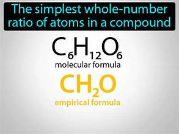

Tỉ lệ số nguyên tối giản

Image source: Topic 3 image sources
| Vietnamese | Tỉ lệ số nguyên tối giản |
|---|---|
| English | Simplest whole-number ratio |
| Pronunciation | /ˈsɪmplɪst ˌhoʊl ˈnʌmbər ˈreɪʃioʊ/ |
| Word type | Noun phrase |
Meaning (Vietnamese)
Tỉ lệ số nguyên tối giản
Meaning (English)
The smallest ratio of constituent atoms expressed using whole numbers.
Example
The ratio 2:6:2 can be simplified to 1:3:1, which is the simplest whole-number ratio.
Tỉ lệ 2:6:2 có thể được rút gọn thành 1:3:1, tức tỉ lệ số nguyên tối giản.
Another definition from the notes
Tỉ lệ nhỏ nhất giữa các nguyên tử cấu thành được biểu diễn bằng các số nguyên
The smallest ratio of constituent atoms expressed using whole numbers
Another example from the notes
2:6:2 simplifies to 1:3:1.
Source of information: Topic 3 notes (see Sources)